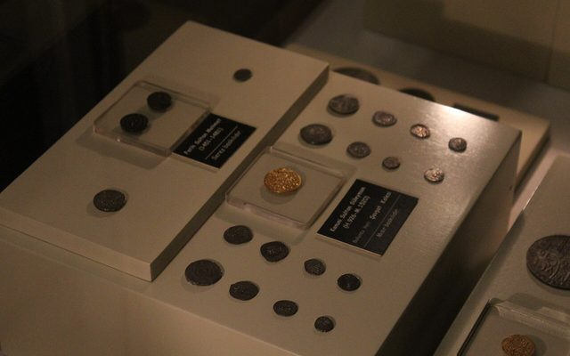

Day one: walk up to Sumela Monastery in the Altındere Valley early in the morning, then the museum in the Kostaki Mansion and Little Ayvasıl Church in Trabzon. Day two: the Rize Museum and Atatürk House among the tea gardens, and on the way back the Giresun Museum and the Monastery of the Virgin Mary.
Day 1

Sümela Monastery, in Maçka amid the lush forests of the Altındere valley, clings to a sheer rock face some 300 metres above the valley floor.

Trabzon Museum is housed in a grand European-style mansion built in the early 20th century for the Greek banker Kostaki Theophylaktos.

Little Ayvasıl (St Anne's) Church, in historic Trabzon, is considered one of the city's oldest surviving Byzantine buildings.
Day 2

Rize Museum presents the heritage of Rize, known for green valleys and tea gardens.

Rize Atatürk House Museum is a historic villa on the hillside where Atatürk spent a night during his 1924 visit.

The Monastery of the Virgin Mary in Şebinkarahisar, Giresun, is an impressive rock monastery that seems to cling to a sheer cliff face.

Giresun Museum is housed in the restored 19th-century former Gogora Church in a historic seaside quarter; its high ceilings and arched windows give the museum a special…
Ready-made routes organised day by day to help you plan. Durations are approximate; check opening hours and road conditions before you travel.